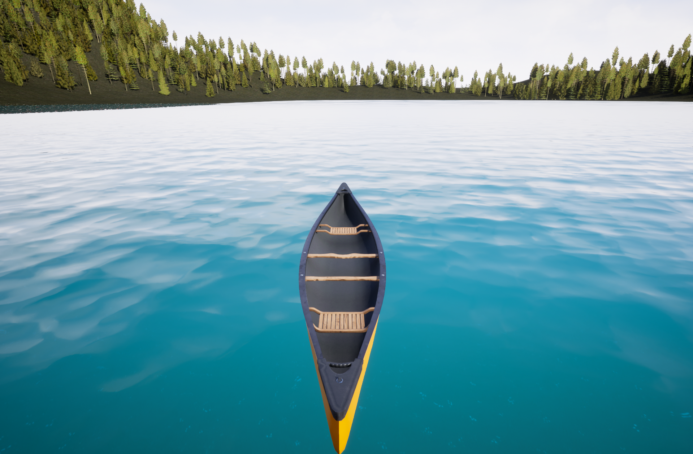
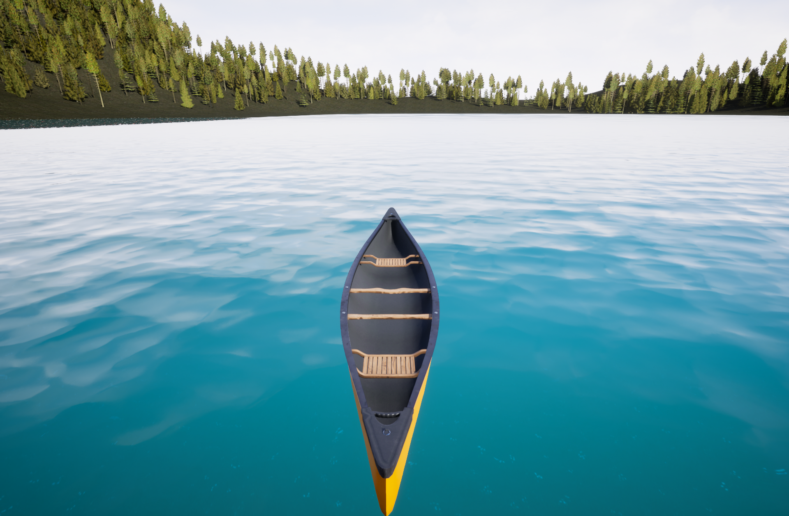

Boat Rider
 

Project Description
This is the individual summer assignment of the education and it is my first Unreal engine based project. Before this project was assigned to me, I was only taught basics of the Unreal engine by our lecturer and I was asked to search and learn how to deliver all the requirements of the assignment. The main task was to deliver interactable natural environment while creating certain actions with main character.
Team Size : 1
Game Engine: Unreal 5
Technology: C++ & Blueprint Visual Scripting
Project Length: 5 Weeks
Personal Contribution
- Generating a level from real topography map, reimplementation of the lightning and creating foliages for all the natural items and materials. In addition to these, I learned how to use water plug-in and create a realistic interactible lake or see.
- Creating time cycle and implementation of the nature sound effects.
- Using and implementing new character animations from open source animation sites to let my main character to perform newer abilities such as swimming and boxing. For achieving the implementation of the new animations I also searched and learned how to use animation montage and skeletal mesh features.
- Implementation of Buoyancy Component to allow my character and other game actors to swim realisticly in the game.
- During the assignment, I completed 2 different 'Udemy' courses about Unreal Engine to learn different aspects of the engine. I also watched Epic Games' YouTube contents tested other smaller game projects while I was learning,